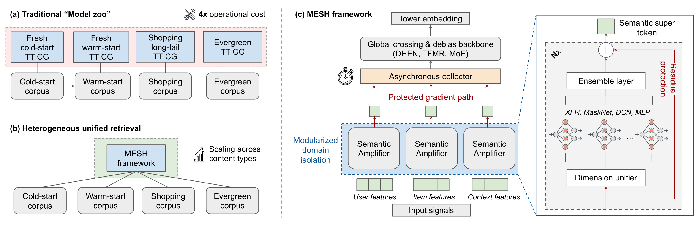
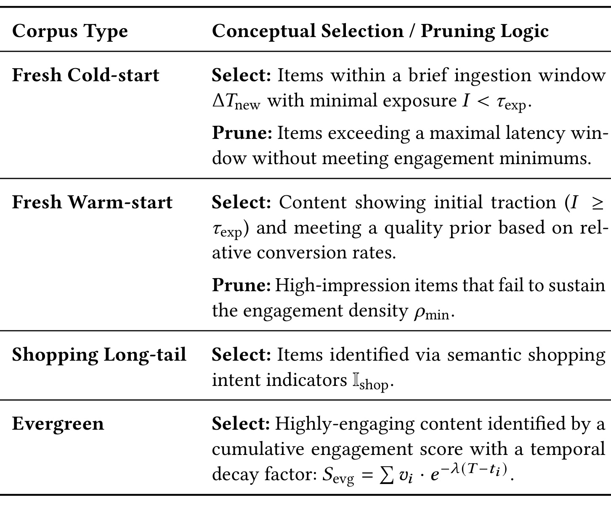
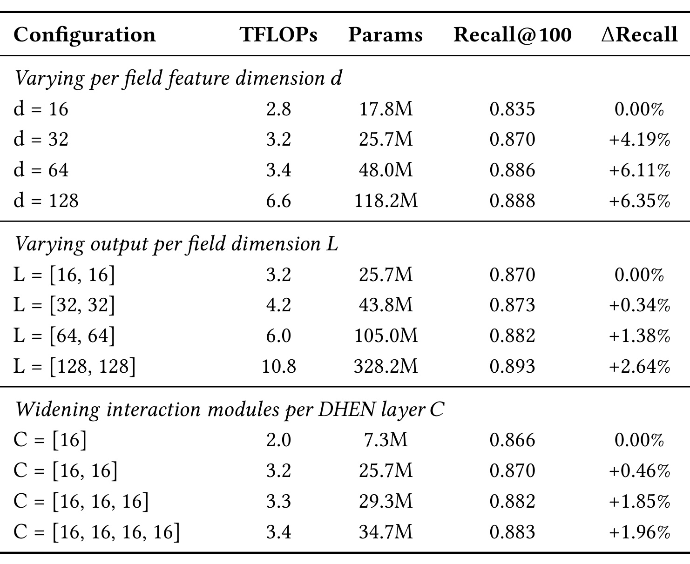
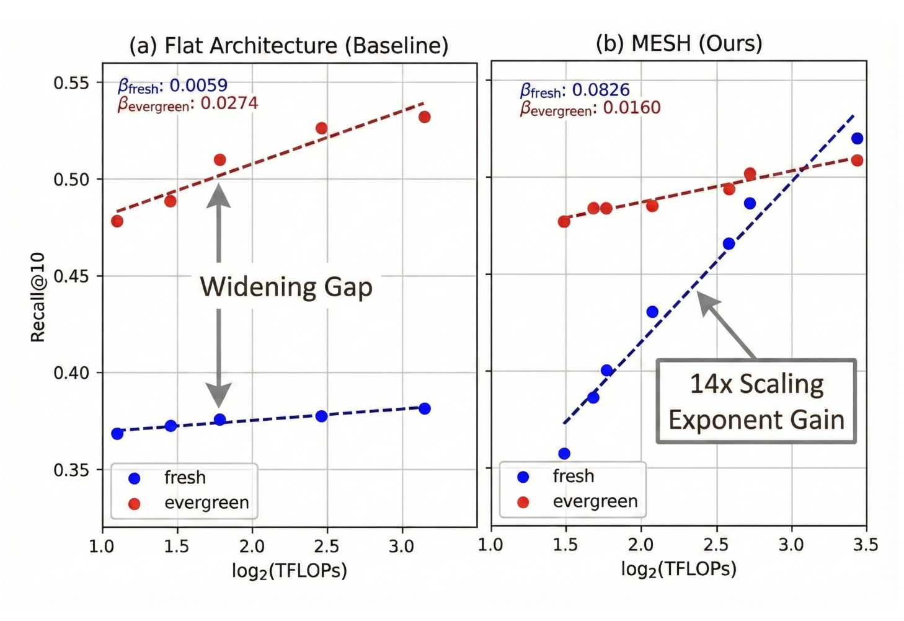
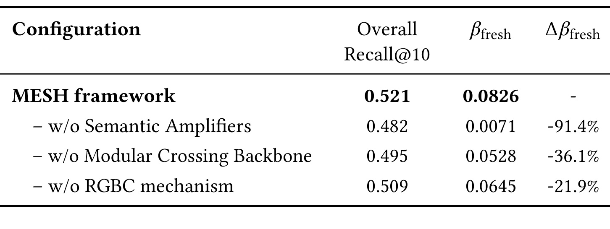
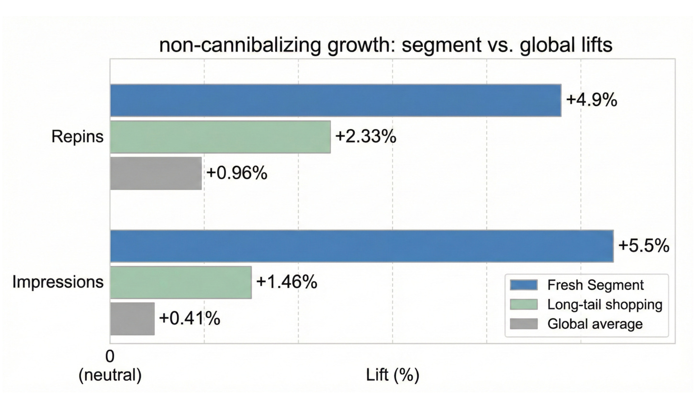
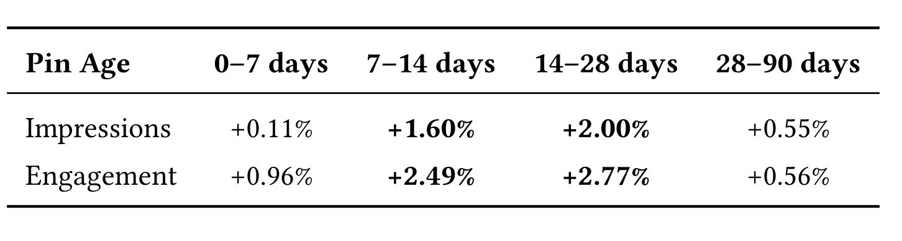
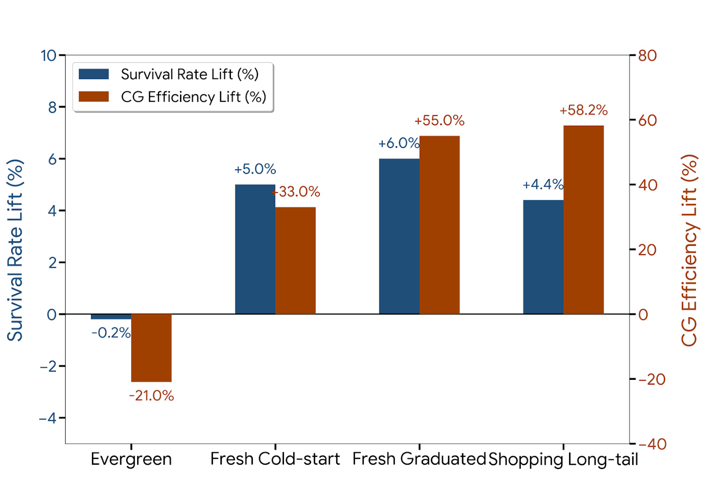
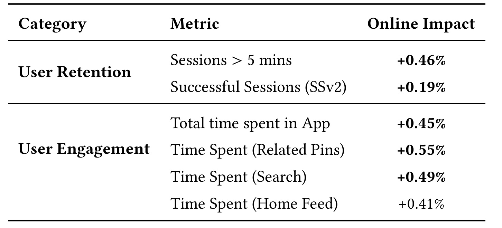
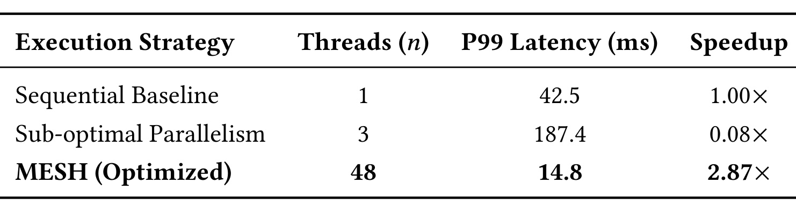

MESH：用异质内容统一表征扩展大规模检索
MESH（Modularized Effective Scaling for Heterogeneity）讨论的是工业推荐里一个常被“整体指标上涨”遮住的问题：同一套大召回模型变宽、变深以后，容量收益是否真的落到了新内容和长尾内容上。论文一作及全部作者均来自 Pinterest，工作已在论文首页标注被 RecSys 2026 Industry Track 接收。本文以 Pinterest 的 Related Pins 两塔召回为对象，主要机构为 Pinterest；唯一论文入口是 arXiv:2607.12392。截至本次核验，没有找到可确认的官方代码或项目页，因此以下实现细节仅按论文正文解释，不把“可复现”写成“已开源”。
异质召回中的容量收益并不均匀：高频 evergreen 内容会主导共享交互层的优化，fresh 与 long-tail 的稀疏信号即使面对更大的模型也可能继续被压制；而为每类内容另建专用召回通道，又会把这种统计问题转化为成倍的系统与运维成本。
1. 背景和问题
1.1 从“更大的模型”追问“谁获得了增益”
传统推荐扩展研究通常先看全局 Recall、CTR 或损失随参数量和算力如何变化。MESH 把总体曲线拆成内容分层曲线：evergreen 是高频、高互动、数据密集的头部；fresh cold-start 是刚进入系统、几乎没有曝光的内容；fresh warm-start 已积累少量早期反馈；shopping long-tail 则有明确购物语义，却交互稀疏。若训练样本和共享交互层由头部信号主导，那么全局指标改善并不能证明稀疏分层同步改善，甚至可能发生“头部越学越好，尾部斜率接近停滞”的扩展分化。
论文把这种现象称为 Scaling Bias of Heterogeneity。在 flat 架构里，所有 feature embedding 先被拼接，再进入 DCN、DHEN、Transformer 或 MoE 等高阶交互算子。设统一特征集合为 $E$、共享表示为 $H$，可写成 $H=\Phi(E;\Theta)$。某个物品 embedding 的梯度必须穿过整个共享映射：
符号解释：$\mathcal{L}$ 是训练损失，$e_{\mathrm{item}}$ 是目标物品表示，$\Phi$ 是共享高阶交互骨干。链式法则本身不是新算法；作者借它指出，所有域都通过同一交互路径更新时，出现频率更高的 evergreen 样本更容易决定 $\partial\mathcal{L}/\partial H$ 的统计方向。论文用下面的不等式概括观察到的梯度失衡：
符号解释：$X_{\mathrm{fresh}}$ 与 $X_{\mathrm{evergreen}}$ 是两类内容子分布，范数衡量相应表示接收到的梯度强度。这是作者对机制的形式化描述，而不是由论文直接逐层测得并公开完整分布的定理。它提出了可检验预测：如果只增加 flat backbone 容量，fresh 的性能—算力斜率会显著小于 evergreen；若先做结构隔离，fresh 斜率应恢复。
1.2 model zoo 的代价与统一召回的约束
工业系统常用多路候选生成器绕过这个问题：cold-start、warm-start、shopping long-tail 和 evergreen 各有一套两塔 CG，再在下游汇合。优点是每路能定制训练样本和目标，缺点是特征、部署、索引、监控与容量规划都被复制。论文图示把它概括为“4× operational cost”，但这只是架构示意，不是经过财务口径审计的成本测量。真正目标不是简单删掉三路模型，而是构造一个统一骨干，同时满足三项约束：稀疏域的信号在进入共享层前不能被洗掉；上下文参与度偏差不能冒充 user-item 内在匹配；子塔增加后，P99 不能按子塔数线性累加。
这也决定了论文证据需要分三层读。第一层是离线扩展公平性，核心是 fresh 与 evergreen 的幂律指数是否发生相对变化；第二层是线上内容生态，核心是新内容、长尾、全局与最终排序漏斗能否同时守住；第三层是执行系统，核心是模块化带来的额外计算能否通过异步调度消化。只有三层同时成立，“统一”才不是用一个更重、更慢的模型替换 model zoo。反过来，专有数据、未公开阈值和未核验代码也意味着这篇论文更接近工业案例与架构假设验证，而不是可直接复刻的公共 benchmark 结论。
2. 方法
2.1 Scaling Bias 与模块化特征域
MESH 先把特征集合按语义拆成 user、item、context 三组 $G=\{G_u,G_i,G_c\}$，在任何跨域交互发生前，分别做拼接与组内归一化。这个切分依据不是内容生命周期标签，而是特征承担的语义角色；fresh 与 evergreen 仍共享 item 域参数，区别来自样本密度。组内初始化写成：
符号解释：$G_k$ 是第 $k$ 个语义域，$f_j$ 是特征，$e_j$ 是其 embedding，$H_k^0$ 是该域的初始稠密流形。关键不在于把三组向量放进三个文件，而在于让归一化和早期非线性都在域内完成：item 域的方差不先和高频 context 统计混合，fresh item 的弱信号因而有一条更短、更干净的梯度路径。作者把这种结构先验称为 modularized domain isolation；它仍保留后续共享骨干，所以不是训练三套互不交流的模型。

Figure 1 的左上角是四路专用两塔召回及对应 corpus，左下角把四类内容收进单个 MESH；右半部分才是实际计算图。user、item、context 原始特征分别经过 Semantic Amplifier，形成统一维度的 super token；异步 collector 收集三个并行输出，再交给 DHEN、Transformer 或 MoE 类型的全局 crossing 与 debias backbone。最右的子塔放大图显示 dimension unifier、可组合的 XFR/MaskNet/DCN/MLP ensemble，以及把原始输入回注高层的 residual protection。红色 protected gradient path 的含义不是冻结稀疏特征，而是减少它在抵达共享层前受到的跨域干扰。图中的 “4× operational cost” 是 model zoo 示意，不能与后文 2.87× 执行加速相减；前者描述通道数量，后者来自特定线程配置下的 P99 对比。
2.2 语义放大器与受保护梯度
每个域并非只过一层 MLP，而是由编码器 $\psi_k$ 把弱的组内表示扩成 semantic super token。它接收归一化后的域内特征，输出可被共享骨干消费的固定维度表示，使稀疏信号在跨域 mixing 之前已有足够表达容量：
符号解释：$\Theta_k$ 是第 $k$ 个子塔参数，$S_k$ 是供全局交互使用的高维语义 token。论文对 $\psi_k$ 不限定唯一算子，Pinterest 实例采用 DHEN，并允许 MaskNet、Transformer、DCNv2 与 MLP 作为 ensemble layer。其递归残差形式为：
符号解释：$l$ 是子塔层号，$\Phi$ 是当前层高阶交互，$\theta_k^l$ 是其参数。输入与交互结果相加后再归一化，使较早的域内语义能持续进入深层；作者称其为 signal amplifier，并把它与 fresh 扩展指数恢复联系起来。所谓“受保护梯度”因此是结构性缩短干扰路径，而不是另加一个只对 fresh 样本生效的损失函数。论文没有公开完整训练目标公式，只说明仍是两塔检索、使用 repin 作为主要正反馈，并采用带物品频率 logit correction 的 in-batch negatives；不应凭经验补写未发表的 loss 权重或采样温度。
训练与推理的连接也很直接：训练时三个域的参数仍由最终检索损失端到端更新，全局层仍能学习跨域组合；推理时子塔先各自编码，再将统一维度输出送入共享层。这样既避免完全隔离导致的交互能力不足，也避免一开始就把稀疏 item 与高频 context 压进同一 flat token 序列。风险是域划分本身成为强先验：若某个特征同时承载内容语义和曝光偏差，把它放进哪个组会影响梯度；论文只评估 $K=3$ 的 user/item/context 主设置，没有证明任意业务域都能沿用同一分法。
2.3 RGBC 门控去偏与全局交互
域内放大之后，MESH 用 Residual Gated Bias Correction（RGBC）控制上下文进入共享层的方式。它并不删除 context，而是先把 user-item 语义核心单独显式化，再让 context 决定调制强度。具体先以 user 与 item super token 的逐元素积定义内在匹配：
符号解释：$T_u,T_i,T_c$ 分别是 user、item、context token，$\odot$ 是逐元素乘，$\sigma$ 是 Sigmoid，$g\in(0,1)$ 是由上下文生成的逐维门。门值与 $X_{ui}$ 逐维对齐，而不是为整条样本只给一个标量权重。最终全局输入为：
符号解释：$g\odot X_{ui}$ 是被上下文置信门调制的 user-item 语义核心，$+T_c$ 是 residual context bias，$H^0$ 再进入全局 crossing backbone。这里的去偏不是删除 context；它把 context 分成两条作用：一条产生门，决定内在匹配各维度可信度；另一条残差进入全局表示，承接设备、时段、意图等与参与度相关的信息。作者希望模型不用让 item 域本身去拟合所有外部曝光方差，从而保留内容 utility。
需要克制理解“bias correction”。论文没有给出独立的因果曝光模型、逆倾向权重或反事实识别，所以 RGBC 更准确地说是带门控的表示解耦假设。它能否真的把 intrinsic compatibility 与 engagement bias 分开，取决于 feature group、监督标签和 context token 的可辨识性。消融显示去掉 RGBC 会降低 fresh 指数，但这只能说明门控形式在该系统设置下有增量，不能证明所得 $X_{ui}$ 就是无偏的内容效用。
2.4 异步执行与服务约束
模块化会引入多个独立子塔。由于三个子塔在 collector 前只读取各自输入、互不依赖，它们具备并行执行的结构条件；若 PyTorch eager 仍按 Python 调度顺序执行，编码关键路径就近似为各子塔时延之和。论文使用 TorchScript JIT 构造 inter-op 并行，概念上把路径改为：
符号解释：$T_k$ 是第 $k$ 个子塔推理时间，$\varepsilon$ 是线程调度与同步开销。因为子塔在 collector 前没有数据依赖，理论上可以并发；但 $\varepsilon$ 不可忽略。论文实际观察到按三个子塔直觉地配置三线程会产生上下文切换与资源争用，P99 反而恶化，最终使用与硬件容量匹配的 48 线程池。异步服务不是模型公式自然附带的免费加速，而是执行图、线程池和硬件共同调优的结果。
训练侧仍采用两塔范式：query 与 candidate 分开编码以支持 ANN，MESH 的主要改动位于 request-level 的 user tower；稀疏类别特征查表、连续特征拼接，经过全局 DHEN 后，再用全连接层、ReLU 与 LayerNorm 投影到 64 维 L2-normalized 向量。物品塔可批处理或缓存，是论文结论中进一步 hybrid inference 的方向，但本次实验没有给出完整缓存命中率、索引更新时延或成本分解。因而可复现系统不仅需要模型结构，还需要并发运行时和线上索引契约。
3. 实验结果
3.1 数据、分桶与评价口径
作者从 Pinterest Related Pins 收集 15 天交互日志，经过采样后约有 10 亿训练记录；离线测试使用紧随训练窗口之后的独立 3 天数据，并从 off-policy uniform random traffic 中取 5%，得到约 4.5 亿样本。uniform slice 的作用是减少生产排序策略造成的选择偏差，但数据、特征与流量都未公开。主要正反馈是 repin，离线指标定义为：
符号解释：$S_K$ 是模型召回的 top-$K$ 集合，$R$ 是该 query pin 的相关物品集合。论文主要用 Recall@10 研究 scaling fairness，因为作者称它与线上参与度相关；Table 2 却报告 Recall@100，因此阅读时不能把两个 $K$ 的绝对数横向拼成一条曲线。fresh 指标只在 fresh candidate subspace 内计算，以免 evergreen 头部稀释信号；shopping deep tail 因过稀导致幂律拟合高方差，被排除在离线 scaling 曲线外，线上再验证其泛化。

Table 1 给出的是概念规则而非可直接复现的阈值。Fresh cold-start 需要处于短 ingestion window 且曝光 $I\lt\tau_{\mathrm{exp}}$；超过最大等待窗口仍达不到互动下限会被剪枝。Fresh warm-start 已越过曝光阈值，并满足基于相对转化的质量先验；高曝光但互动密度低于 $\rho_{\min}$ 的内容会退出。Shopping long-tail 依赖购物意图标记，Evergreen 由带时间衰减的累计参与分数识别。论文明确这些阈值随平台流量自适应调整，却没有公开数值；因此后续的 fresh、shopping、evergreen 增益都绑定 Pinterest 的内部 cohort 定义，不能直接迁移为“发布若干天”的固定规则。它仍有一项重要优点：年龄、曝光和互动密度被分开，使 7–28 天的 warm-start 恢复不会被误称为纯零样本冷启动。
3.2 离线扩展规律与公平性
一般扩展实验分别扫描每字段输入维度 $d$、DHEN 输出维度 $L$ 和每层交互模块数 $C$，并以幂律加偏置拟合性能：
符号解释：$x$ 是 FLOPs 或参数规模，$y$ 是 Recall，$\alpha$ 是尺度系数，$\gamma$ 是不可约基线项，$\beta$ 是作者比较内容分层时使用的扩展指数。$\beta$ 越大代表在该观测范围内性能随算力增长得更快，但它不是跨数据域恒定的物理常数，也不保证范围外继续按同样斜率扩展。

Table 2 显示三条扫描都向上，但成本与收益并不线性。$d$ 从 16 增至 128，参数由 17.8M 增至 118.2M、TFLOPs 由 2.8 增至 6.6，Recall@100 从 0.835 到 0.888，相对增益从 +4.19%、+6.11% 逐渐趋近 +6.35%。$L=(16,16)$ 到 $L=(128,128)$ 时参数升到 328.2M、TFLOPs 到 10.8，Recall@100 从 0.870 到 0.893；$C$ 加宽到四个交互模块时 Recall@100 为 0.883。它支持“结构仍能吃到容量”的作者主张，也同时显示边际递减。由于扫描改变的不只是单一参数量，还改变表示宽度或 ensemble 结构，表格不能用来判定哪个算子单独造成改善。

Figure 2 是全篇最核心的公平性证据。flat baseline 中，evergreen 的 $\beta=0.0274$，fresh 仅为 0.0059，蓝线几乎停滞且表示差距随算力扩大；MESH 中 fresh 指数变为 0.0826，evergreen 为 0.0160。作者据 $0.0826/0.0059\approx14$ 称“fresh scaling exponent 提升 14×”，每个点是五次独立评估的均值。这个 14× 不是 Recall 提升十四倍：图上 MESH fresh Recall@10 仍处于约 0.36–0.52 的范围。MESH 与 flat 的曲线形态确实符合结构隔离的预测，但论文没有在图中给误差条、拟合区间或指数置信区间；五次均值降低了偶然波动，却不足以证明幂律在更大算力范围继续成立。evergreen 指数下降也被作者解释为接近饱和与容量再分配，是否是可接受 trade-off 仍需结合线上全局 guardrail。
3.3 消融：结构保护而非单纯增参

Table 3 把整体 Recall@10 与 fresh 扩展指数同时列出。完整 MESH 为 0.521 与 0.0826；去掉 Semantic Amplifiers 后分别降至 0.482 与 0.0071，fresh 指数下降 91.4%，几乎回到 flat 停滞区间。将 modular crossing backbone 换成等参数 MLP 后，整体 Recall 为 0.495、指数为 0.0528，下降 36.1%；将 RGBC 换成普通加法后为 0.509 与 0.0645，下降 21.9%。等参数 MLP 的对照尤其重要，因为它削弱了“只是参数更多”的解释；同时三项消融不是完全正交的因子实验，语义放大器、crossing 与门控之间存在交互，不能把三个百分比简单相加。表中也未给方差、置信区间或每种配置的完整 FLOPs，因而结论应写成“在作者的 Pinterest 设置下，输入端语义放大影响最大”，而不是普遍定律。
论文还讨论 $K$ 的敏感性：$K=1$ 退化为 flat，$K=3$ 对应 user/item/context 的主设置；继续拆得更细会增加计算与运维复杂度，未表现出同等收益。该结果提示模块化的价值来自与真实偏差源对齐，而非任意增加分支数。更有说服力的后续实验应固定总参数、总 FLOPs、负样本和线程策略，只改变 group assignment，并报告各层梯度范数或表示相似度，才能把“受保护路径”从结构解释推进到直接机制测量。
3.4 线上分群、漏斗与留存证据
线上 A/B 在 Related Pins 运行 3 周，控制组是相同日期训练数据的生产两塔，治疗组为 MESH，并保持用户级随机化。论文对 fresh headline 存在内部口径冲突：摘要写“fresh-item repins +5.5%”，但实验正文和 Figure 3 把 +5.5% 标为 impressions、fresh repins 标为 +4.9%。本笔记保留这一来源冲突，并在细分结果中采用图表的明确轴标签，不把二者悄悄合并。

Figure 3 报告 fresh impressions +5.5%、repins +4.9%；shopping long-tail 分别 +1.46% 和 +2.33%；global average 分别 +0.41% 和 +0.96%。作者据此称 non-cannibalizing growth：目标分层改善时，全局并未下降。这个判断比只报 fresh lift 更强，因为它至少检查了整体参与 guardrail；但“全局不降”仍不能排除不同内容池之间更细的流量转移，也没有展示每项基线值、置信区间与流量占比。尤其摘要与图表对 fresh repin 的差异需要作者澄清，在得到勘误前，任何引用都应同时注明字段与来源位置。图中六个百分比都是相对 lift，不能从它们反推出各内容池的绝对曝光量或贡献份额。

Table 4 进一步说明增益主要发生在哪里。0–7 天的 impressions 仅 +0.11%，engagement +0.96%；7–14 天为 +1.60% 与 +2.49%；14–28 天达到 +2.00% 与 +2.77%；28–90 天回落到 +0.55% 与 +0.56%。加粗项集中在 7–28 天，说明 MESH 最明显地帮助“已经出现一点早期信号、但尚未进入头部”的 warm-start/graduate 阶段，而不是彻底解决发布瞬间的零反馈。这个年龄分解与方法叙事相容：语义放大器需要可用内容与少量行为信号才能恢复梯度。它也限定了外推范围——将结果概括成“冷启动提升 5.5%”会丢掉生命周期差异。
论文把候选能否进入最终排序作为第二条生态证据，定义：
符号解释：$C_{\mathrm{total\ nominations}}$ 是召回阶段提名集合，$C_{\mathrm{ranked}}$ 是成功进入最终排序的候选，$P_{50}$ 是最终排名前 50。SR 观察候选存活，CE@50 观察能否进入高价值 top-50。文中的“funnel efficiency +55%”具体指 fresh graduated 的 CE 相对 lift +55.0%，不是从曝光到转化的通用漏斗效率，也没有公开绝对 CE 基线。

Figure 4 中 fresh cold-start 的 SR +5.0%、CE +33.0%，fresh graduated 为 +6.0% 与 +55.0%，shopping long-tail 为约 +4.4% 与 +58.2%；evergreen 的 SR -0.2%、CE -21.0%。这张图同时给出正向与负向结果：稀疏分层更容易穿透最终排序，evergreen 的高价值候选率却显著下降。作者将 evergreen SR 基本中性、CE 下降解释为减少重复头部曝光、把发现容量转向 fresh/long-tail；这是合理假说，但单靠相对 lift 不能排除 evergreen 候选质量损失。需要绝对分母、最终用户效用及长期内容供给数据，才能判断它是健康再分配还是 guardrail 被平均指标掩盖。

Table 5 报告 Sessions > 5 mins +0.46%、Successful Sessions（SSv2）+0.19%、总 App 时长 +0.45%、Related Pins/Search/Home Feed 时长分别 +0.55%、+0.49%、+0.41%。作者把超过五分钟的 session 视为深度参与和长期价值代理，因此摘要称 retention +0.46%；严格说它不是用户在若干天后回访的 cohort retention rate。跨 surface 同时为正，降低了 Related Pins 通过挤占 Search 或 Home Feed 获益的担忧，但仍是同一线上实验中的参与指标，不能直接证明长期留存因果。表中加粗表示作者报告的统计显著结果，论文未公开具体检验、置信区间与多重比较处理。
3.5 异步服务与系统代价

Table 6 显示顺序执行 P99 为 42.5ms；按三个子塔配置 3 个线程时，P99 反而升到 187.4ms，只剩 0.08×，暴露上下文切换与资源争用；将 inter-op 线程池调到 48 后，P99 降至 14.8ms，相对顺序基线为 2.87×。摘要把它写成 throughput improvement，详细表格实际直接测的是 P99 latency 与 speedup，两者不能不加说明地等同。更重要的是，2.87× 同时来自模块独立性、TorchScript 执行图、线程池大小与未公开硬件条件，不能归因于 gated bias correction 或训练目标。论文称上线 CPU 利用率稳定、无显著 contention/wait 增加，却没有列出 QPS、batch size、GPU/CPU 型号、峰值内存和成本，因此系统证据能说明“可行”，还不能完成跨平台复现。
从工程上看，这一反例很有价值：模块化模型的延迟不是分支数的简单函数，线程数等于子塔数甚至可能最差。复现者应至少同时报告顺序、朴素并行、硬件匹配并行三组，并固定 batch、并发与流量形态；否则只报优化后 P99 会把调度收益伪装成模型收益。训练/推理总成本也要分开：离线训练中的三子塔和 DHEN 增加 FLOPs，在线 item tower 的缓存或批处理能够回收多少尚未量化。由此可见，MESH 是模型—系统协同方案，不是只替换一层网络即可获得全部数字。
4. 总结
4.1 我的判断
MESH 最有价值的贡献不是某个新 loss，而是把“推荐模型扩展”从一条全局曲线改写成内容分层的斜率问题，并给出结构、线上生态与服务系统三组相互约束的证据。模块化 user/item/context 子塔先保护稀疏语义，RGBC 再控制 context bias 进入共享层，异步 collector 则把分支成本从顺序累加转成可调度并行。作者报告的主要结果包括 fresh 扩展指数约 14×、fresh graduated CE +55.0%、Sessions >5 mins +0.46%，以及 48 线程设置相对顺序执行的 2.87× P99 speedup。它们分别属于拟合斜率、相对漏斗指标、留存代理和系统延迟，不能拼成一个统一因果链。
4.2 局限与后续跟进
局限至少有五点。第一，数据、分桶阈值、特征与线上流量均为 Pinterest 专有，公共数据能否出现同样 Scaling Bias 未验证。第二，Figure 2 没有公开指数置信区间，14× 只在有限 FLOPs 范围内成立。第三，摘要与 Figure 3 对 fresh repin 的 +5.5% 口径冲突，实验图另报 +4.9%，需作者勘误。第四，+55% 是 fresh graduated CE 的相对 lift，缺少绝对基线与最终转化，不等于整个推荐漏斗提升 55%。第五，2.87× 依赖 TorchScript、48 线程与具体硬件，而代码、项目页和配置尚未核验，模型贡献与系统调优贡献没有拆开。
后续最值得做三组验证。其一，在固定参数量、FLOPs 和负样本的条件下，只改变域划分与 RGBC，并直接记录各内容层的梯度范数、门值分布和表示相似度，检验“保护路径”机制。其二，公开或构造带内容年龄、曝光密度和语义长尾的可复现实验，报告扩展指数的 bootstrap 区间及跨随机种子稳定性。其三，补齐线上绝对 SR/CE、流量占比、长期 cohort retention 与内容供给指标，同时做顺序/朴素并行/硬件匹配并行的成本分解。若这些证据成立，MESH 才能从 Pinterest 的成功工业实例进一步成为异质检索扩展的通用设计原则。